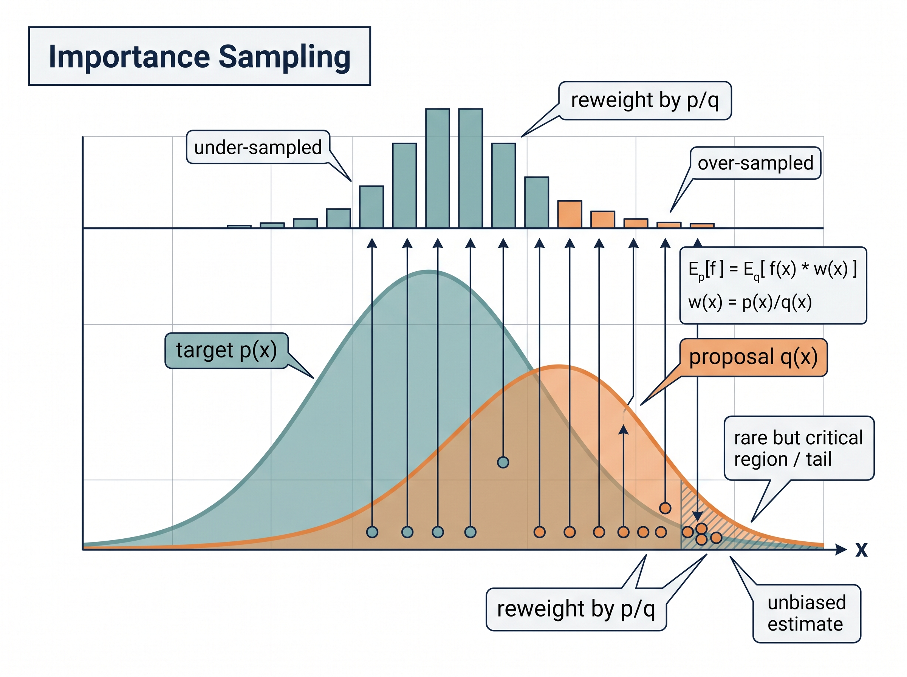

"When I cannot solve the integral, I ask ten thousand dice to vote on the answer, and I trust the average of their opinions."
A Statistically Enfranchised AI Agent
The big picture
Most of the probability we care about in sensing lives inside integrals that have no closed form. What is the expected localization error when an inertial-navigation drift, a Global Navigation Satellite System (GNSS) multipath term, and a magnetometer bias all interact nonlinearly? What is the probability that a wearable's heart-rate estimate exceeds a clinical alarm threshold given all the noise sources upstream? You will almost never write these answers down analytically. Monte Carlo methods replace the pen-and-paper integral with a simple, brutal, and shockingly effective idea: draw samples, run them through your model, and average. This section teaches you how to turn a distribution into random draws, how to estimate quantities from those draws, how fast the error shrinks, and how to make the whole thing efficient enough for a battery-powered device. These techniques are the engine under particle filters, Bayesian posteriors, uncertainty propagation, and the synthetic-data pipelines you will meet later in the book.
This section assumes the random variables, distributions, and expectations of Chapter 4, sections 4.1 through 4.3, and it uses the aleatoric-versus-epistemic distinction of section 4.4 to decide what to sample. Section 2 of Chapter 2 supplies the noise models behind these distributions if you have not met them. It needs no measure theory; the law of large numbers is enough.
The Monte Carlo estimator: averaging your way to an integral
Every uncertainty number a sensor system reports, every confidence interval on a fault probability, every particle-filter update ultimately rests on the one estimator below. Get its convergence wrong and a device ships a reliability guarantee it cannot keep. What. Monte Carlo estimation answers the question "what is \(\mathbb{E}_{x\sim p}[f(x)]\)?" by drawing \(N\) independent samples \(x_1,\dots,x_N\) from \(p\) and computing the sample mean
$$\hat{\mu}_N = \frac{1}{N}\sum_{i=1}^{N} f(x_i) \;\;\approx\;\; \mathbb{E}_{x\sim p}[f(x)] = \int f(x)\,p(x)\,dx.$$Why it works. The estimator \(\hat{\mu}_N\) is unbiased: its expectation equals the true integral for every \(N\). By the law of large numbers it converges to the true value as \(N\) grows. The central limit theorem (the result that a sum of many independent contributions tends toward a Gaussian shape) then makes its error approximately Gaussian with standard deviation \(\sigma/\sqrt{N}\), where \(\sigma^2 = \operatorname{Var}_p[f(x)]\). That \(\sqrt{N}\) is the single most important fact in this section. To halve your error you must quadruple your samples. The error does not care how many dimensions \(x\) has, which is why Monte Carlo typically beats grid-based numerical integration once your state vector grows past roughly three or four dimensions. A 12-dimensional inertial measurement unit (IMU) plus bias state would need a grid of astronomical size; the same accuracy from Monte Carlo needs only enough samples to tame the variance.
How you use it. Nearly every quantity you want is an expectation in disguise. A probability \(P(A)\) is \(\mathbb{E}[\mathbb{1}_A]\), the expected value of an indicator. A quantile is found by sampling and sorting. A predictive mean is \(\mathbb{E}[f(x)]\); a predictive variance is \(\mathbb{E}[f(x)^2]-\mathbb{E}[f(x)]^2\). Choose \(f\), draw from \(p\), average. In short: Monte Carlo turns any question you can phrase as an expectation into three verbs, sample, evaluate, average. The pipeline in Figure 4.7.1 traces those three verbs end to end, from the target distribution to an estimate carrying its own error bar.
Key insight
The Monte Carlo error \(\sigma/\sqrt{N}\) is independent of dimension. This is why sampling, not quadrature, is the default tool for propagating uncertainty through the high-dimensional models of sensor fusion. The curse of dimensionality that destroys grid methods barely touches Monte Carlo; what hurts instead is high variance \(\sigma\), and most of the craft in this section is about reducing it.
Solitaire, a sick mathematician, and a casino in Monaco
Monte Carlo has an oddly domestic origin. In 1946, recovering from encephalitis, the mathematician Stanislaw Ulam was passing the time with games of Canfield solitaire and wondered what the odds of winning actually were. The combinatorics defeated him, so he had a better idea: just deal many random hands and count how often you win. He took the notion to John von Neumann, who saw at once that the same trick could crack the neutron-diffusion integrals of the hydrogen-bomb work at Los Alamos. The project needed a code name, and because Ulam's uncle used to borrow money to gamble at the Monte Carlo casino in Monaco, the method that now powers particle filters and Bayesian sensor fusion is named after a roulette table.
Turning uniform noise into any distribution
What. The estimator of the previous subsection took for granted that you could already draw samples from \(p\); producing those draws is the problem we solve now. Your hardware random-number generator gives you one primitive: uniform draws on \([0,1)\). Everything else is built from that primitive by transformation.
How, method one: inverse transform. If \(F\) is the cumulative distribution function (CDF) of a scalar random variable and \(U\sim\text{Uniform}(0,1)\), then \(X = F^{-1}(U)\) has exactly the distribution you wanted. This is why an exponential inter-arrival time for a Poisson event stream is generated as \(-\lambda^{-1}\ln(1-U)\): the log is the inverse CDF. Inverse transform is exact and cheap whenever you can invert \(F\).
How, method two: rejection sampling. When you cannot invert \(F\) but you can evaluate an unnormalized density \(\tilde{p}(x)\) (a density you can compute only up to an unknown overall constant, the usual situation for a Bayesian posterior), wrap it in a proposal \(q(x)\) you can sample, scaled so that \(M\,q(x)\ge\tilde{p}(x)\) everywhere. Draw \(x\sim q\), accept it with probability \(\tilde{p}(x)/(M\,q(x))\), and repeat. Accepted samples are distributed exactly as \(p\). The catch is efficiency: the acceptance rate is \(1/M\), so a loose envelope in high dimensions wastes almost every draw.
How, method three: importance sampling. Sometimes you cannot or should not draw from \(p\) at all. Instead draw from a convenient \(q\) and reweight: \(\mathbb{E}_p[f] = \mathbb{E}_q[f(x)\,w(x)]\) with weights \(w(x)=p(x)/q(x)\). This is the mathematical heart of the particle filter you will build in Chapter 10, where \(q\) is the motion model and the weights carry the measurement likelihood. Importance sampling shines when you deliberately over-sample a rare but critical region, such as the tail where a fall-detection alarm should fire. You then correct the bias with the weights. Figure 4.7.2 illustrates importance sampling reweighting.

Checkpoint
So far: you now hold three ways to turn plain uniform draws into samples from any target, inverse transform when you can invert the CDF, rejection when you can bound the density with a proposal, and importance sampling when you draw from a convenient proposal and reweight by \(p/q\).
Mental Model
Imagine you want the average income of a whole city, but knocking on random doors mostly finds ordinary earners and almost never the handful of millionaires who dominate the true average. So you cheat: you go straight to the wealthy neighborhood where the rare high earners cluster, which is easy to survey. That biased sample would badly overstate the city, so you scale each person's income by how much you over-visited their neighborhood: someone from a district you sampled ten times more often than its real share counts for one-tenth. The reweighting is the ratio \(p/q\), the true frequency over your convenient sampling frequency, and it converts a survey of the wrong crowd into an honest estimate of the right one, precisely because you knew exactly how you skewed the visits.
Step-Through: inverse-transform sampling of an exponential inter-arrival time
Trace the inverse-transform recipe with a tiny example. Model the time between Poisson events (say radio wake-ups) as an exponential with mean \(\tau = 2\) seconds, whose CDF is \(F(x) = 1 - e^{-x/\tau}\) and inverse \(F^{-1}(u) = -\tau\ln(1-u)\). Suppose your uniform generator hands you four draws \(u = 0.10,\ 0.55,\ 0.90,\ 0.30\). Push each through the inverse CDF: for \(u=0.10\), \(1-u = 0.90\), \(\ln 0.90 = -0.1054\), so \(x = -2(-0.1054) = 0.211\) s. For \(u=0.55\): \(\ln 0.45 = -0.7985\), \(x = 1.597\) s. For \(u=0.90\): \(\ln 0.10 = -2.3026\), \(x = 4.605\) s. For \(u=0.30\): \(\ln 0.70 = -0.3567\), \(x = 0.713\) s. Notice the mechanism at work: the small \(u=0.10\) maps to a short wait while \(u=0.90\) maps to a long tail event, because the flat uniform axis is stretched exactly by the slope of \(F^{-1}\). The sample mean of the four waits is \((0.211+1.597+4.605+0.713)/4 = 1.78\) s, already circling the true mean of \(2\) s with just four draws; add more and the \(\sigma/\sqrt{N}\) law pulls it in.
Practical example: sizing the battery budget for a wearable electrocardiogram (ECG) patch
A cardiac-patch team needs to guarantee that 99% of devices survive a 14-day monitoring window on one charge. Battery life depends on how often the on-device arrhythmia detector wakes the radio, which depends on the ectopic-beat rate, the false-alarm rate of the detector, and the temperature-dependent leakage current. No closed form links these. The team samples 50,000 virtual patients: each draws a beat rate from a fitted Gamma, a detector false-alarm rate from its validation posterior, and a leakage curve from the datasheet tolerance band, then simulates 14 days of wake events. Counting how many virtual devices die early gives the failure probability directly, with a Monte Carlo confidence interval attached. When the first estimate said 4% would fail, they raised the wake-consolidation threshold and re-ran; sampling turned an intractable reliability integral into an overnight batch job. The clinical-validation obligations that sit on top of this appear in Chapter 34.
Real-World Application: robot localization in the Robot Operating System (ROS)
The amcl node shipped with the ROS navigation stack, used on warehouse robots and delivery platforms worldwide, is literally named Adaptive Monte Carlo Localization: it represents the robot's pose belief as a cloud of weighted particles, moves them through the odometry motion model as a proposal, and reweights them by how well each hypothetical pose explains the latest laser scan against the map. That reweight-by-likelihood step is exactly the importance sampling of this section, and the Kullback-Leibler divergence (KLD) adaptive part shrinks or grows the particle count \(N\) on the fly to hold the sampling error within a target bound.
How many samples? Error bars on your error bars
What. Now that you can generate and reweight samples by any of the three methods above, the next question is how far to trust the average they produce. A Monte Carlo estimate without an uncertainty is half an answer. Because \(\hat{\mu}_N\) is itself a random variable, you can estimate its standard error from the very same samples: \(\widehat{\text{SE}} = \hat{\sigma}/\sqrt{N}\), where \(\hat{\sigma}\) is the sample standard deviation of the \(f(x_i)\) values. Report \(\hat{\mu}_N \pm 1.96\,\widehat{\text{SE}}\) for an approximate 95% interval.
Why it matters for sensing. When you estimate a rare-event probability such as a \(10^{-4}\) false-alarm rate, naive sampling needs on the order of \(10^6\) draws just to see a handful of events, and the relative error stays enormous until you do. This is exactly where importance sampling earns its keep: bias the proposal toward the tail, and with a well-matched proposal the same accuracy can arrive with orders of magnitude fewer draws. The estimator that turns raw draws into an answer with a defensible interval is the code below.
Common Misconception
The misconception is that a narrow confidence interval means the estimate is accurate. When you sample a rare event and happen to observe zero occurrences, the plug-in standard error \(\hat{\sigma}/\sqrt{N}\) collapses toward zero and reports a deceptively tight interval around a probability estimate of exactly zero, even though the true rate may be far larger; a small standard error certifies that your samples agreed with each other, not that they were numerous enough to have seen the event at all.
import numpy as np
rng = np.random.default_rng(42)
def mc_estimate(f, sampler, n, batch=100_000):
"""Streaming Monte Carlo mean with a 95% standard-error interval.
Batches keep memory flat, which matters on edge hardware."""
total, total_sq, count = 0.0, 0.0, 0
while count < n:
m = min(batch, n - count)
vals = f(sampler(m)) # f applied to a batch of draws
total += vals.sum()
total_sq += (vals ** 2).sum()
count += m
mean = total / count
var = total_sq / count - mean ** 2
se = np.sqrt(max(var, 0.0) / count)
return mean, 1.96 * se
# Estimate P(||accel bias|| > 0.05 g) for a 3-axis IMU with correlated bias.
cov = np.array([[4e-4, 1e-4, 0.0],
[1e-4, 4e-4, 0.0],
[0.0, 0.0, 9e-4]]) # units of g^2
L = np.linalg.cholesky(cov)
sample_bias = lambda m: (L @ rng.standard_normal((3, m))).T
exceeds = lambda b: (np.linalg.norm(b, axis=1) > 0.05).astype(float)
p_hat, halfwidth = mc_estimate(exceeds, sample_bias, n=2_000_000)
print(f"P(exceed) = {p_hat:.4f} +/- {halfwidth:.4f}")
The example applies the estimator to a real specification question: how often does an IMU's correlated bias vector exceed a magnitude limit? The Cholesky factor, a lower-triangular matrix \(L\) that acts as a matrix square root of the covariance so that \(LL^{\top}=\Sigma\), turns independent Gaussian draws into correlated ones, a trick you will reuse constantly when the noise channels of a sensor are coupled. The returned half-width tells you whether two million samples were enough or whether you should keep drawing.
Right tool: let the sampler build correlated draws for you
The Cholesky-and-matrix-multiply dance above is instructive but unnecessary in production. numpy.random.Generator.multivariate_normal(mean, cov, size=n) replaces the factorization, the reshaping, and the transpose with a single call, and scipy.stats gives you inverse-transform and rejection sampling for dozens of named distributions through one .rvs() method. Roughly eight lines of hand-rolled sampling collapse to one, and the library handles numerical edge cases (near-singular covariance, tail underflow) that a naive Cholesky silently mishandles. Write the loop once to understand it, then reach for the library.
Variance reduction and low-discrepancy sampling
What. Since error scales as \(\sigma/\sqrt{N}\) and buying more \(N\) is expensive on an edge device, the smart move is to shrink \(\sigma\). Three techniques recur throughout sensing.
Variance reduction is precisely the practice of replacing your estimator with a different, still-unbiased estimator of the same quantity that has smaller variance, so each sample buys more accuracy. It matters because the \(\sigma/\sqrt{N}\) law makes brute-force accuracy quadratically expensive: cutting \(\sigma\) in half is worth as much as quadrupling \(N\), and it costs no extra draws. Mechanically, every method here rewrites the target expectation so that the random part you actually average has less spread, whether by pairing draws that cancel, subtracting a known-mean term, or forcing even coverage. Reach for variance reduction whenever samples are expensive or the integrand has exploitable structure; stick with plain sampling when draws are cheap and you value the simple, independent error bars.
Antithetic variates. For every draw \(x\), also use its mirror image (for a symmetric distribution, \(-x\) after centering). Positively correlated errors cancel, and a symmetric integrand can see its variance drop sharply at zero extra sampling cost. Control variates subtract a correlated quantity whose expectation you know analytically, replacing part of the noisy estimate with an exact term. Stratified sampling partitions the domain and samples each stratum in proportion, guaranteeing coverage rather than trusting luck.
Quasi-Monte Carlo. Instead of pseudo-random points, use a deterministic low-discrepancy sequence such as Sobol or Halton that fills space more evenly than random draws ever do. For smooth integrands the error can improve toward \(1/N\) rather than \(1/\sqrt{N}\), a decisive speedup. At a million samples that is, in the best case of a sufficiently smooth integrand, the gap between an error near \(10^{-3}\) and one near \(10^{-6}\), a thousandfold sharper answer for the same budget. This is the workhorse behind the digital-twin and synthetic-data sweeps of Chapter 55, where you want to cover a parameter space of sensor placements or lighting conditions without wasting simulation budget on clumped points. As of 2024, you rarely code these sequences by hand: scipy.stats.qmc (added in SciPy 1.7, 2021) supplies Sobol and Halton generators with proper scrambling and balance checks, and has largely replaced hand-rolled low-discrepancy code.
When to reach for each. Use antithetic and control variates when you have structure you can exploit and evaluations are cheap. Use quasi-Monte Carlo for smooth, moderate-dimensional integrals such as calibration sweeps. Fall back to plain pseudo-random sampling when the integrand is rough, discontinuous, or when you need the honest, well-understood \(\sqrt{N}\) error bars that the central limit theorem guarantees; low-discrepancy sequences complicate confidence-interval construction because their points are not independent.
Research Frontier
The hardest choice in this section, designing a good importance-sampling proposal \(q\), is now being automated by learning it. Flow Annealed Importance Sampling Bootstrap (FAB), introduced by Midgley et al. at the International Conference on Learning Representations (ICLR) in 2023, trains a normalizing flow (a neural network that reshapes a simple distribution into a complex one through a chain of invertible maps) to match a target density using an alpha-divergence objective that directly rewards low importance-weight variance, and it bootstraps that training with annealed importance sampling so the flow discovers the rare, heavy-weight regions a hand-built \(q\) would miss. For sensing pipelines this points toward proposals that adapt themselves to the tail of a fault or alarm distribution rather than being tuned by hand, a direction that connects the classic estimators here to the learned generative models later in the book.
Exercise
You must estimate the probability that a lidar range gate misses a pedestrian, a target near \(2\times10^{-3}\). (a) Using the \(\sigma/\sqrt{N}\) rule, how many plain Monte Carlo samples are needed so the relative half-width of the 95% interval is below 10%? (b) Design an importance-sampling proposal that shifts mass into the miss region and write the weight function \(w(x)\). (c) Argue why antithetic variates might help little here while importance sampling helps a lot.
Self-check
1. Why does the Monte Carlo error \(\sigma/\sqrt{N}\) not contain the dimension of \(x\), and what quantity does grow with dimension in practice? 2. Given only uniform draws, how would you generate samples from an exponential distribution, and which of the three sampling methods is that? 3. Your importance-sampling weights are almost all near zero except one enormous weight. What has gone wrong, and what does it say about your proposal \(q\)?
Lab 4
estimate sensor noise models from data and propagate uncertainty through a simple pipeline.
Try It: watch importance sampling beat brute force on a rare event
Estimate a rare tail probability two ways on a laptop with only NumPy, and see the variance collapse. (1) Define the target as \(P(X > 4)\) for \(X\sim\mathcal{N}(0,1)\); the true value is about \(3.17\times10^{-5}\), so keep it as ground truth. (2) Write the plain estimator: draw \(N=100{,}000\) standard-normal samples with rng.standard_normal(N), compute the fraction exceeding 4, and repeat the whole run 200 times to record the spread of the estimates. (3) Write the importance-sampling estimator: draw from a shifted proposal \(q=\mathcal{N}(4,1)\) via 4 + rng.standard_normal(N), keep the indicator of exceeding 4, and multiply each by the weight \(w(x)=\exp(-4x+8)\) which is the ratio of the standard-normal density to the shifted one; average the weighted indicators. (4) For both methods print the mean over the 200 runs and, more importantly, their standard deviations across runs. (5) Confirm that both means sit near the true value while the importance-sampling standard deviation is smaller by roughly two orders of magnitude, then push the threshold to 5 and watch the plain estimator return mostly zeros while the weighted one stays stable.
Bibliography
Foundations of Monte Carlo
The paper that named and framed the method, motivated by exactly the intractable multidimensional integrals that recur in sensor modeling.
Robert, C. P., and Casella, G. (2004). Monte Carlo Statistical Methods, 2nd ed. Springer.
The standard graduate reference on inverse transform, rejection, importance sampling, and Markov chain Monte Carlo (MCMC), with the theory behind every estimator in this section.
Sampling and variance reduction
Ripley, B. D. (1987). Stochastic Simulation. Wiley.
A compact, practical treatment of generating random variates and reducing variance, close to how an engineer actually implements samplers.
Niederreiter, H. (1992). Random Number Generation and Quasi-Monte Carlo Methods. SIAM.
The definitive account of low-discrepancy sequences (Sobol, Halton) and why they can beat the \(\sqrt{N}\) rate for smooth integrands.
Owen, A. B. (2013). Monte Carlo Theory, Methods and Examples.
A freely available, modern, and unusually clear book covering standard error estimation, importance sampling diagnostics, and quasi-Monte Carlo; excellent for self-study.
Sampling for estimation and filtering
Shows importance sampling and resampling operating inside a recursive estimator, the bridge from this section to the particle filters of Chapter 10.
Harris, C. R., et al. (2020). Array Programming with NumPy. Nature.
Documents the vectorized random-number and linear-algebra machinery (Generator, Cholesky, multivariate normal) that makes batched Monte Carlo practical on real hardware.
What's Next
Chapter 5 leaves the world of clean synthetic draws and confronts real recorded data: how to build datasets from sensor streams without leaking future information into the past, how to split by device and by time rather than at random, and how the sampling intuition from this section informs honest train-test protocols. The same law of large numbers that made these estimators trustworthy also warns what happens when samples are correlated rather than the independent draws Monte Carlo assumed.